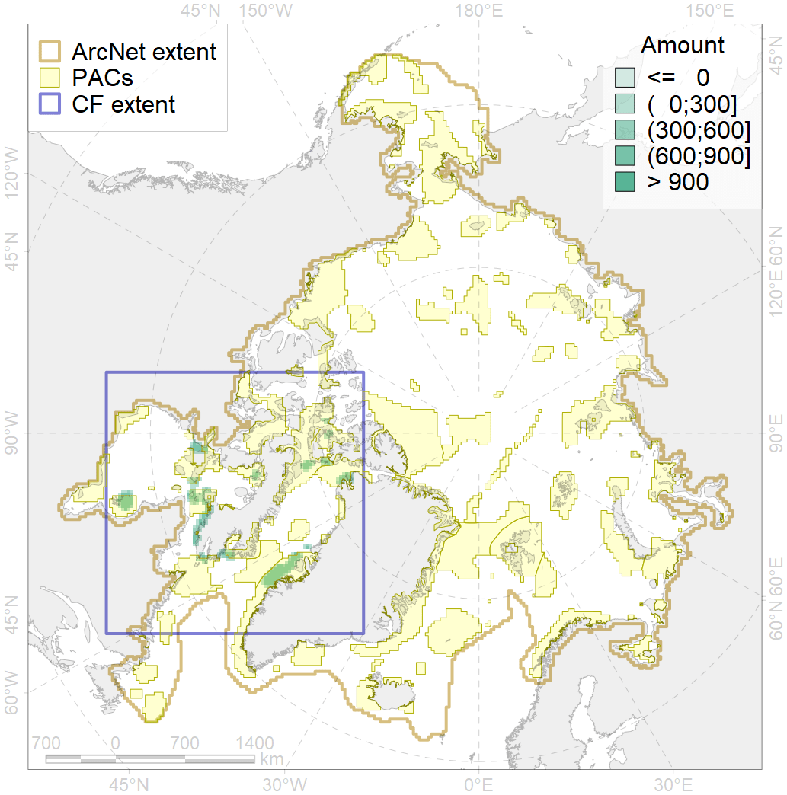
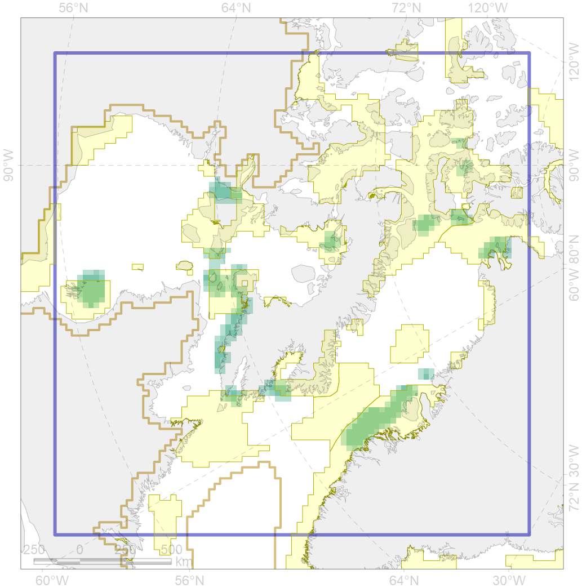

1003

| CF ID | 1003 |
| CF Name | Atlantic Walrus Wintering Areas in Canada |
| Time Period | 1995-2010 - for Canada, till 2016 - for Greenland |
| Source(s) | http://www.dfo-mpo.gc.ca/Library/341178.pdf https://nammco.no/topics/atlantic-walrus/#1478699758629-7da126c3-48a6 https://dce2.au.dk/pub/TR89.pdf |
| Seasonality | October-April |
| Depth Horizon | 0-200m |
| Methodology | Compilation, expert input, boat/ plane surveys, tagging, TEK |
| Author Name | Maria Solovyeva |
| Notes | |
| Conservation Target Set in the Scenario | 0.672 |
| Conservation Target Achieved in the Scenario | 0.769 (Scenario: 114.5%) |
| PAC ID | Proportion in the PAC | Contribution to ArcNet Target Achievement | PAC’s Contribution to the Achieved Target |
|---|---|---|---|
| 44 | 30.7% | 43.4% | 37.9% |
| 46 | 2.3% | 2.7% | 2.3% |
| 51 | 6.1% | 8.7% | 7.6% |
| 52 | 9.2% | 13.7% | 11.9% |
| 66 | 1.9% | 2.9% | 2.5% |
| 67 | 3.3% | 4.0% | 3.5% |
| 71 | 11.5% | 17.0% | 14.9% |
| 73 | 9.1% | 12.8% | 11.1% |
| 75 | 0.2% | 0.3% | 0.2% |
| 76 | 1.3% | 1.8% | 1.6% |
| inner | 75.7% | 107.1% | 93.6% |
| outer | 24.3% | 7.3% | 6.4% |